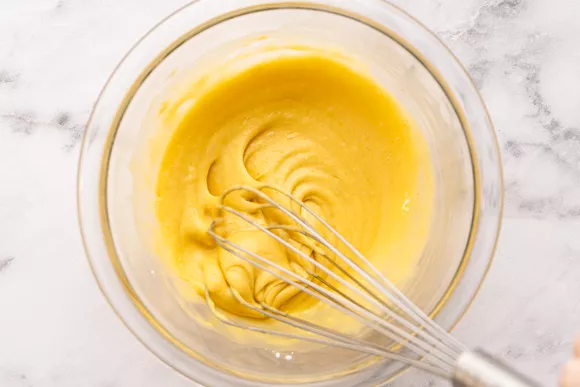
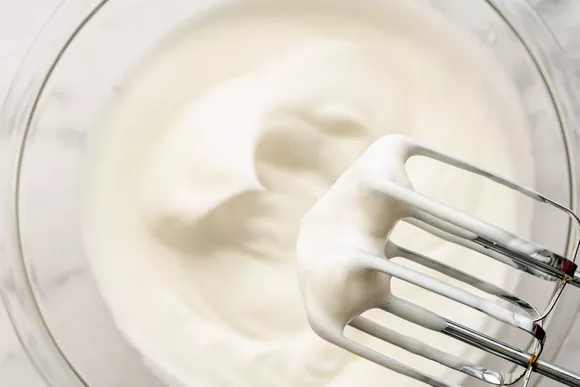
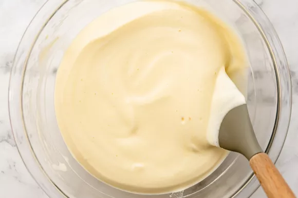
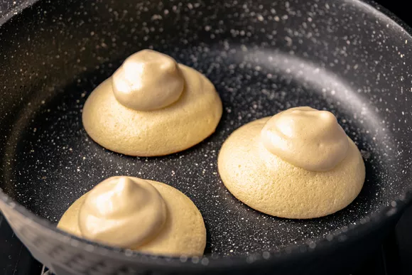
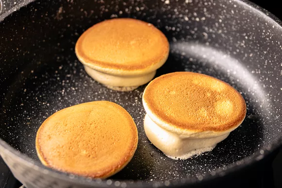
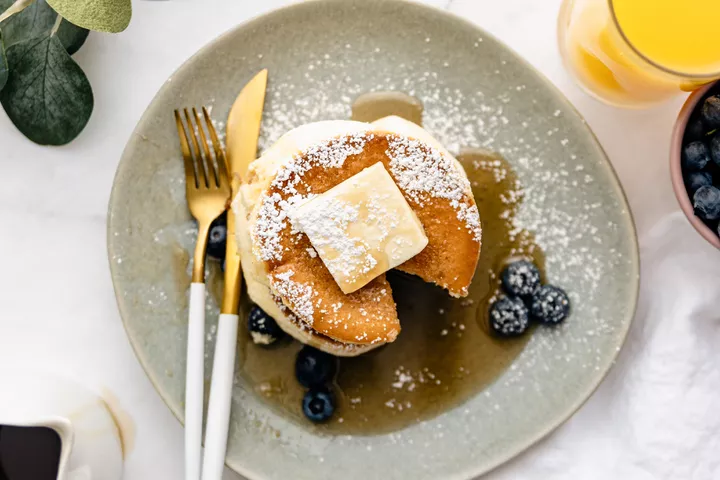

Japanese soufflé pancakes are the holy grail of fluffy pancakes. They are cloud-like, airy, tall, and sweet. Your family will be so impressed!
Japanese soufflé pancakes are a hybrid of airy soufflés and flat, sweet American-style pancakes — they call for the same ingredients, like flour, eggs, sugar, milk, and baking powder, just much less of it. Copious amounts of billowy meringue, whipped egg whites stabilized with sugar and cream of tartar, are folded into the pancake batter, making them incredibly fluffy.
This recipe cooks 3 pancakes at a time, which fit on a large (12-inch) skillet. Cook 2 at a time if your skillet is smaller. The cooked pancakes should be served right away. If you would like to serve all 6 pancakes at the same time, you’ll need to use 2 skillets.
Separate the 4 eggs — you’ll need 4 egg whites in a large bowl and 2 egg yolks in separate large bowl. Save the remaining 2 egg yolks for another use.
Place the egg whites in the fridge to chill while you make the egg yolk batter.
To the egg yolks, add the flour, baking powder, vanilla, salt, milk, and oil. Whisk until smooth and set it aside.
Heat a large (12-inch) nonstick skillet over very, very, very low heat. My stove top goes from 0 to 10 and I set it to a 1.
Take the egg whites out of the fridge and add the cream of tartar. Use a hand mixer to whisk them on medium-low speed for about 30 seconds. You can also use a stand mixer.
Increase the speed to medium and whisk for 1 minute, gradually sprinkling in the sugar. Then, increase the speed to medium-high and whisk until the egg whites are glossy, billowy, and form firm peaks. From start to finish, it should take about 5 minutes. The meringue is ready when you can invert the bowl and it will not fall out.
Scrape about 1/2 cup of the meringue into the yolk mixture and gently whisk to combine. This will make it easier to incorporate the remaining meringue into the batter.
Add about half of the remaining meringue and use a spatula to gently fold it in until mostly combined — you will still see streaks of white. Fold in the remaining meringue. Be gentle and make sure not to overmix. You want the batter to stay light and airy.
Use the pastry brush to lightly brush oil on the skillet. Use a large spoon to scoop 3 evenly sized pancakes, about 3 generous tablespoons each, with the batter piled up high. Do not spread the batter out with the spoon.
Immediately drizzle about 1 tablespoon of water on an empty space inside the skillet, trying not to let the water touch the pancakes. This will create steam to help the pancakes stay moist. If the water sizzles and evaporates right away, your skillet is too hot — lower it even more.
Immediately cover the skillet with a lid and let the pancakes cook for 10 minutes. The exact cook time depends on how much heat the lowest setting on your stovetop emits. It should cook very low and slow.
Try not to lift the lid to peak as the pancakes cook.
Keep the remaining batter refrigerated.
After 10 minutes, scoop 1 tablespoon of batter on top of each pancake.
Run an offset spatula or a very thin spatula under a pancake — it’s best to use the long side of the offset spatula, not the tip. The pancake will release from the skillet easily when it’s ready. Don’t force it! If it starts to fall apart, let it cook for 2 to 5 more minutes with the lid on, but do not increase the heat.
Carefully flip all 3 pancakes. The bottoms, now on top, will be a deep golden brown. Cover the skillet and cook for about 8 minutes. When the pancakes are ready, it will be easy to release them from the skillet.
Serve the pancakes right away — leftovers aren’t great. The pancakes may deflate a little, but that’s okay!
Follow the same methods to cook the remaining pancakes.
